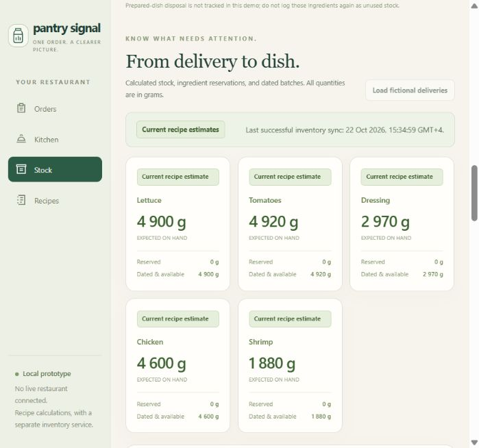
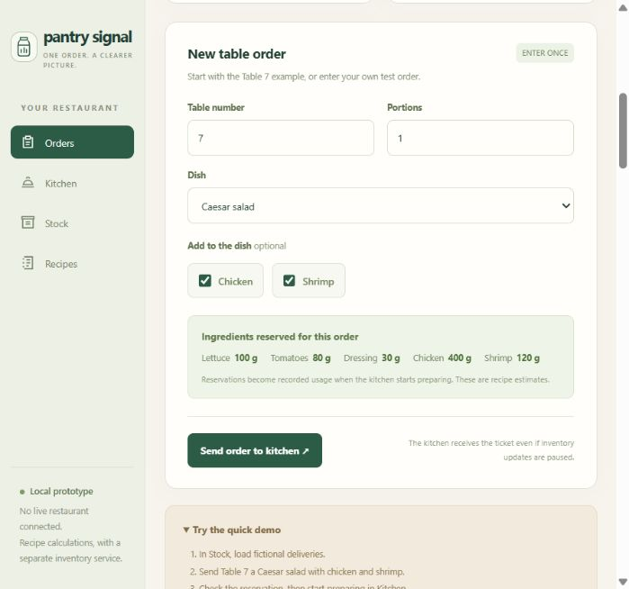

Enter the order once.
A dish, its additions, and a table number become one saved order. Each order keeps the recipe quantities used for its calculation.
FOR RESTAURANT OWNERS & KITCHEN MANAGERS
Recipe-based inventory estimates for restaurant kitchens.
Track deliveries, see what each kitchen ticket uses, and compare expected ingredients with a physical stock count. Keep your team’s orders and stock records connected.
Open source. Explore in your browser.
+ Chicken + Shrimp
Expected stock after preparation
400 g used once. Ready does not deduct it again.
One order entryA recipe behind each quantity.
Service keeps movingKitchen and stock update separately.
Estimates you can checkCompare with what is really there.
INSIDE PANTRY SIGNAL.
The actual local app, shown with fictional sample data. Record a delivery, send a table’s order, and follow the ingredient estimate as preparation starts.


Still image. Press play to watch; stop to return to the start.
THE WALKTHROUGH, WITH OR WITHOUT MOTION.
Send Table 7’s Caesar salad with chicken and shrimp.
The queued ticket reserves 400 g of chicken.
Start preparation. Expected chicken stock becomes 4,600 g.
Mark ready. Chicken stays at 4,600 g; usage is recorded once.
THE IDEA IS SIMPLE.
The kitchen follows its ticket. The inventory service follows the recipe. Physical stock checks help reveal where the estimate and reality differ.
A dish, its additions, and a table number become one saved order. Each order keeps the recipe quantities used for its calculation.
Queue, prepare, and mark ready. Ingredient updates run separately, so pausing inventory does not stop the kitchen ticket.
Follow reservations, recipe usage, and received batches. Compare a measured stock count with the estimate before deciding what to investigate.
GET A FEEL FOR THE FLOW.
Try a Caesar salad with chicken and shrimp. Watch a 400 g chicken reservation become recorded usage when preparation starts.
Chicken + Shrimp · 1 portion
Chicken addition: 400 gSend the order to create a kitchen ticket and reserve its recipe ingredients.
The ingredient estimate follows each change in the order.
USEFUL RECORDS, IN ONE PLACE.
Give the shift’s deliveries, recipe quantities, kitchen progress, and stock checks a shared record your team can review.
Help shape it for your kitchenRecord ingredient quantities in separate batches, with their received date and recorded expiry. See dated-stock reminders and quantities that need attention.
Keep ingredient weights and additions with each dish. Every order retains the recipe snapshot used for its calculation, so later recipe edits leave earlier usage intact.
Queued orders reserve ingredients. Starting preparation records usage. Marking ready keeps that usage unchanged, and interrupted inventory updates can catch up later.
Record unused raw-ingredient waste and measured stock checks. A difference is a reason to investigate portions, recipes, measurements, or missing entries.
HELP SHAPE THE NEXT VERSION.
Tell us what would make this useful in your kitchen.
Restaurant owners and kitchen managers know which records help during a busy shift. Your workflow can guide what we build next.
Share your kitchen’s needs Opens a public GitHub issue draft. A GitHub account is required.How do you record deliveries and stock today?
Which ingredient or waste question takes the most time to answer?
What would you need before trying this alongside your current system?
TAKE A CLOSER LOOK.
See the app in action or put the Table 7 sample through its steps. Start here to decide which parts would help your kitchen.
The local app needs Python 3.11 or newer. It saves its records on your computer. The source is available under the MIT licence.
Keep the source files together in the extracted folder.
On Windows, double-click Start Pantry Signal.cmd. On other systems, follow the setup guide to run python app.py.
Enter deliveries and orders, move a ticket through preparation, and review the stock estimate.
BEFORE YOUR FIRST SHIFT.
Learn how orders, recipes, and stock checks fit together.
See the current version’s scopeYes. Watch the app walkthrough and try the interactive Table 7 sample on this page. To enter your own trial deliveries and orders, open “Run it on your computer” above and follow the setup guide.
Record received ingredients as batches with their quantities and dates, then check the recipe quantities for the dishes you want to track. As you enter orders and record preparation, Pantry Signal updates the expected stock. Physical stock counts give you a separate measurement to compare.
A queued order reserves its recipe ingredients. Starting preparation records ingredient usage and releases the reservation. Marking the dish ready does not deduct the ingredients again. Cancelling an order while it is still queued releases its reservation.
The order form and kitchen board keep working separately. The stock view shows when its figures are not current, and saved order changes can be applied when inventory recovers. You can try this flow with the sample’s pause and resume controls.
Start with one table.
See where the record leads.